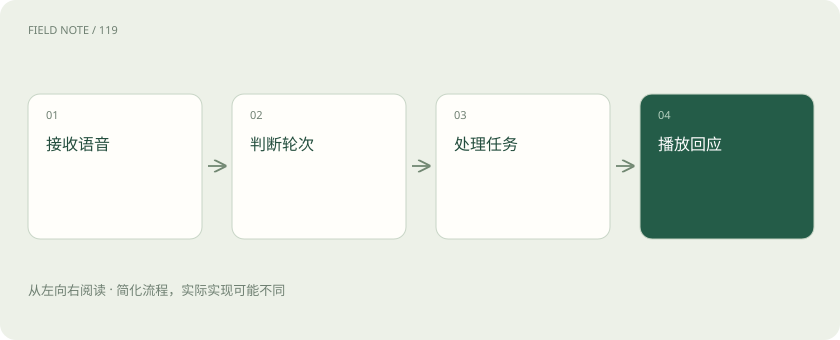
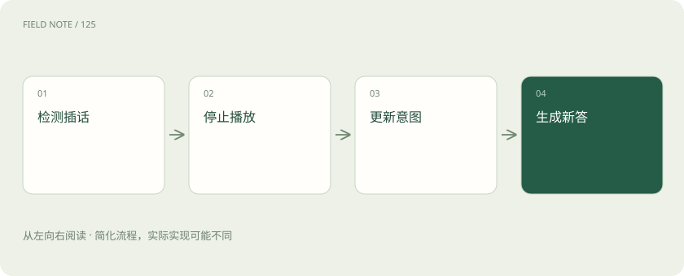

先读哪些知识
先用一个类比理解
类比只帮助建立直觉，不等同于技术的完整机制。
一图看懂

级联路线把环节明确分开
ASR把语音转为文字，语言模型根据文字与上下文形成回应，TTS再合成为声音。级联路线便于分别检查转写、推理和发声的问题，也可替换其中某个组件；但语调、情绪或非语言声音在转写时可能丢失，各阶段缓冲还会累积等待。流式处理能够重叠部分环节，并不意味着所有步骤都能同时完成。
以电话预约为例，用户说“周三，嗯，还是周四吧”，转写的中间结果可能先出现周三。智能体若据此提前提交，就会执行过时意图。本站建议区分临时转写与已确认语义，允许提前准备查询，却把有副作用的动作留到意图稳定之后，避免把流式低延迟变成过早承诺。
端到端音频保留另一种表达路径
端到端音频模型可以直接消费或生成音频表示，不必把每次交流都严格经过可见文字。这样能够利用一些文字难以完整表达的声音线索，但业务系统仍然需要结构化参数、工具状态与审计记录。是否提供转写、如何同步文字与声音，应以具体模型及运行时能力为准。
预约助手听出迟疑，不代表它能凭语气决定最终日期。关键字段仍应在提交前被明确确认。本站建议将声音表达和业务状态分别管理：模型可以自然地说话，宿主负责记录预约对象与工具结果。不能把“直接语音输入输出”理解为省掉权限控制、参数核验和错误恢复，也不能假定所有端到端模型的中断机制相同。
VAD不等于理解一句话说完
VAD检测是否存在语音活动，通常依据声音特征判断说话与静音；轮次检测还需要判断用户是否表达完当前意图。自然停顿、犹豫与列举都会让静音和语义结束分离。LiveKit官方文档区分轮次检测策略，并说明可结合VAD、转写及相关检测能力处理会话。
用户说“我想预约……”后停顿找日历，过早接话会打断思考；等到很长静音再答，又让交流拖沓。本站建议按场景选择策略：短命令与长叙述需要不同容忍度。先检查噪声是否导致VAD误判，再检查语义轮次是否过早，避免把所有打断问题都归结为语言模型反应速度。
图解：预约确认状态
Barge-in必须处理播放进度
Barge-in指用户在助手说话时插话，系统需要及时停止或调整输出，并理解新内容。停止音频播放与取消后台生成不是一回事；若只静音，后端可能继续生成旧回复；若只取消生成，已经进入播放缓冲的声音仍可能继续。运行时需要协调这些状态。
助手正在念预约地址，用户说“日期改一下”，应停止旧说明并接收修改。对话历史还要知道用户实际听到了哪一段，不能把整段未播放文本都视为已经告知。本站建议保存已播放范围或等效状态，再决定续说、重述或改写。具体可获得何种播放事件取决于运行时，不应臆造逐字精确的听觉确认能力。
取消语音生成不会撤回已经发出的工具操作。应用可用操作版本或关联标识识别晚到的旧响应，避免它覆盖新意图；若旧预约已经提交，需要先查明结果，再按业务规则修改或取消，不能只丢弃响应就当作副作用不存在。
回声与真实插话必须区分
扬声器播放的助手声音可能重新进入麦克风，形成回声。如果被当成用户输入，系统会自问自答，或不断打断自己的输出。回声消除、噪声抑制和背景语音处理承担不同职责，不能用一个通用“降噪”开关概括。耳机、免提和会议室设备的声学条件也不同。
电话预约时，旁边电视说出一个日期，系统不应立刻修改预约。本站建议分别测试助手回声、用户轻声插话和背景人声，观察误唤醒与漏检的取舍。提高阈值可能减少误打断，也可能忽略真正的插话，所以应基于场景录音与明确标注调整，而不是只凭安静房间的一次演示判断可用性。
延迟预算分解到可观察事件
用户感到的等待包含音频采集与传输、轮次判断、模型生成、工具查询、语音合成以及播放缓冲。首个声音出现快，不代表任务完成快；助手可以很快说“我来查一下”，真正的预约查询仍需时间。评估必须区分首次响应、有效信息出现和业务完成三个时间点。
本站建议从用户停止说话开始，到首段有效回答播放为止建立事件记录，同时标出工具等待。若瓶颈在轮次检测，换更快TTS可能几乎无效；若瓶颈在外部预约系统，提前查询只读信息可能有帮助。不要虚构通用毫秒目标，应根据用户场景、网络和设备测量，并报告较慢情况而非只选最佳样本。
工具确认要有明确状态机
语音工具操作至少应区分收集参数、等待确认、已提交、结果未知和已完成。助手说“预约好了”必须有成功结果支持；工具超时不能被朗读成失败后立即重复提交，因为第一次请求可能已经生效。用户在确认期间插话修改日期，也需要使旧确认失效。
例如系统复述“周四下午两点”，用户说“不是，两点半”，应回到参数核对，再询问最终安排。本站建议将确认绑定具体日期、时区、对象和操作版本，避免一个模糊的“好”授权未来所有变化。断线后查询已有预约，再决定是否重试；声音自然度不能代替副作用的幂等与业务核验。
图解：插话处理路径

用对话场景而非单句测试验收
验收应包含口音、数字纠正、长停顿、重叠说话、回声、工具慢响应和中途断线。分别检查识别内容、轮次边界、播放取消、参数更新和最终业务状态。用户体验流畅与预约正确需要同时成立，不能只看转写准确率，也不能只让评审给声音打分。
本站建议设置一段连续案例：用户改日期、助手查询、用户在播报中插话、提交时网络中断。观察恢复后是否重复预约、是否错误宣告成功、是否保留已确认参数。LiveKit提供会话、轮次与中断等运行时能力，具体业务状态机与场景验收则是本站工程建议，需要应用自己实现并验证。
放在一起对比
| 维度 | 能力 | 边界 |
|---|---|---|
| VAD | 检测语音活动 | 不能独自判定语义结束 |
| 轮次检测 | 判断何时接话 | 需要场景权衡 |
| 打断 | 协调播放与生成 | 保留实际播放状态 |
| 工具确认 | 约束业务副作用 | 超时先查事实 |
放进真实场景
像电话接线员：既要知道对方有没有说完，也要分清“我听到了”和“预约已经办成”。
别踩这个误区
想一想
用户在确认日期后改口，先前的“好”还能用于提交吗？
不能。参数已经变化，应更新操作版本并重新确认具体安排。
关联阅读
资料与边界
本文为原创知识讲解。类比和图示经过简化；示例数字不代表实测或报价。整理日期：2026-11-05。文末列出对应技术的原始资料，具体功能与版本支持请以原文为准。